Coordinate Data and Grid (Matrix) Data in Matplotlib¶
This page is a companion to the chapter on Matplotlib in the book. In the previous page we saw that the type of data decides which plot is suitable. This page looks at a second, equally important question: how is the data arranged?
Some data comes as pairs of values, such as a month and its temperature. This is called coordinate data or X–Y data. Other data comes as a table of rows and columns, such as temperatures for several cities across several months. This is called grid data or matrix data. Matplotlib has different plotting methods for these two arrangements. plot() and scatter() are built for coordinate data, while imshow(), contour() and contourf() are built for grid data. If you pass data in the wrong arrangement, you either get an error or a graph that makes little sense.
The page is set out as a small project. It first states the problem and the tasks. The solution then follows in two parts:
- Part A answers three theory questions: the difference between coordinate and grid data, the purpose of the four plotting methods, and how matrix slicing works in NumPy.
- Part B uses the real flights dataset from the Seaborn library. You will load it, reshape it into a matrix, slice out a group of years, and draw it in four different ways.
These skills are useful well beyond this chapter. Reshaping a table into a matrix, slicing arrays and choosing the right plot are everyday tasks in data analysis, science and machine learning with Python. Every script on this page is broken into steps, each step shows its printed output, and a complete script follows the steps so that you can run the whole program in one go.
Table of Contents¶
- Coordinate Data and Grid (Matrix) Data in Matplotlib
- Problem Statement
- Task Requirements
- Part A — Theory Questions
- Q1. Explain the difference between:
- Q2. Explain the purpose of the following Matplotlib methods:
- Q3. Explain the role of matrix slicing in NumPy.
- Part B — Programming Tasks
- Task 1: Load the Dataset
- Task 2: Convert Data into Matrix Form
- Task 3: Matrix Slicing
- Task 4: Plot Coordinate Data
- Task 5: Plot Grid or Matrix Data
- Task 6: Comparative Discussion
- Expected Learning Outcomes
- Before You Start
- Solution to Part A
- Answer to Q1: Coordinate Data and Grid or Matrix Data
- 1. Coordinate Data (X–Y Data)
- 2. Grid or Matrix Data
- Comparison Between Coordinate Data and Grid Data
- Flowchart: Types of Plot Data
- Important Note on Two Variables
- Answer to Q2: Purpose of plot(), scatter(), imshow() and contour()
- 1. plot()
- 2. scatter()
- 3. imshow()
- 4. contour()
- Comparison of Plotting Methods
- Common Beginner Error: Passing a 1-D List to imshow()
- Answer to Q3: Role of Matrix Slicing in NumPy
- Meaning of Matrix Slicing
- Why Matrix Slicing Is Important
- Example Matrix
- General Syntax of Matrix Slicing
- Example 1: Extract Selected Rows
- Example 2: Extract Selected Columns
- Example 3: Extract a Smaller Matrix
- Flowchart: Matrix Slicing
- Small Concept Script
- Common Beginner Error: Index Out of Range
- Important Note: The Ending Index Is Not Included
- Follow-up Questions on Slicing
- Comparison of the Four Methods
- Compare the Following Methods in Tabular Form
- Additional Comparison
- Solution to Part B
- Solution to Task 1: Load the Dataset
- Solution to Task 2: Convert Data into Matrix Form
- Solution to Task 3: Matrix Slicing
- Solution to Task 4: Plot Coordinate Data
- Why Task 4 Is Important
- Step 1 - Load Dataset and Select One Year
- Step 2 - Create Line Plot Using plot()
- Step 3 - Create Scatter Plot Using scatter()
- Comparison Between plot() and scatter()
- Common Error Example: Missing Quotes Around a Column Name
- Solution to Task 5: Plot Grid or Matrix Data
- Why Task 5 Is Important
- Step 1 - Create Matrix Data
- Step 2 - Plot Using imshow()
- Step 3 - Plot Using contourf()
- Difference Between imshow() and contourf()
- Common Error Example: Passing a List Instead of a Matrix
- Solution to Task 6: Comparative Discussion
- Q1. Which methods were easier to understand?
- Q2. When should plot() be preferred?
- Q3. When should imshow() or contour() be preferred?
- Q4. Which graph looked most informative and why?
- Full Combined Model Script
- Glossary of Technical Terms
Problem Statement¶
Matplotlib provides different plotting methods for different kinds of data.
Some plots use coordinate data (X–Y data) where values are given as pairs of coordinates.
Examples:
- marks of students
- temperature across months
- rainfall across years
Other plots use grid or matrix data, where values are arranged in rows and columns.
Examples:
- temperature across cities and months
- passenger counts across months and years
- image data stored as pixels
Different plotting methods are suitable for different situations.
For example:
plot()andscatter()work well for coordinate dataimshow()andcontour()work well for grid or matrix data
In this project, students will study these plotting methods and compare their usefulness.
Task Requirements¶
Part A — Theory Questions¶
Answer the following questions.
Q1. Explain the difference between:¶
(a) Coordinate Data (X–Y Data)
(b) Grid or Matrix Data
Give one real-life example of each.
Q2. Explain the purpose of the following Matplotlib methods:¶
plot()scatter()imshow()contour()
State:
- what kind of data each method accepts
- where the method is useful
Q3. Explain the role of matrix slicing in NumPy.¶
Use examples to explain the syntax:
matrix[row_start:row_end, col_start:col_end]
Part B — Programming Tasks¶
Use the flights dataset available in Seaborn.
This dataset stores the number of airline passengers for different:
- months
- years
Task 1: Load the Dataset¶
Write a Python script to:
- import the required libraries
- load the flights dataset
- display first few rows
- explain what each column means
Task 2: Convert Data into Matrix Form¶
Convert the dataset into a table where:
- rows represent years
- columns represent months
- cell values represent passenger counts
Display the matrix.
Task 3: Matrix Slicing¶
Use slicing to extract only a selected group of years.
For example:
- 1952–1958
Explain the slicing used.
Task 4: Plot Coordinate Data¶
Choose one year from the dataset.
Create:
(a) Line Plot using plot()¶
Show:
- month on x-axis
- passenger count on y-axis
(b) Scatter Plot using scatter()¶
Plot the same data.
Compare the two graphs.
Task 5: Plot Grid or Matrix Data¶
Using the sliced matrix:
(a) Create a graph using imshow()¶
(b) Create another graph using contourf()¶
Add:
- title
- axis labels
- color bar
Compare the two graphs.
Task 6: Comparative Discussion¶
Write a short discussion on:
- Which methods were easier to understand?
- When should
plot()be preferred? - When should
imshow()orcontour()be preferred? - Which graph looked most informative and why?
Expected Learning Outcomes¶
After completing this project, students should be able to:
- distinguish between coordinate data and grid/matrix data
- use
plot()andscatter() - use
imshow()andcontour() - perform matrix slicing using NumPy
- choose an appropriate visualization method
Before You Start¶
The scripts on this page use four Python libraries.
| Library | What it does on this page | Learn more |
|---|---|---|
| Matplotlib | Draws all the graphs | matplotlib.org |
| NumPy | Stores numbers as arrays and matrices, and lets us slice them | NumPy for absolute beginners |
| pandas | Holds the flights data as a table (a DataFrame) and reshapes it with pivot() |
pandas getting started |
| Seaborn | Supplies the flights dataset | seaborn.load_dataset |
If any of them is missing, install them from a terminal (Command Prompt on Windows):
pip install matplotlib numpy pandas seaborn
Some words used often on this page:
| Word | Simple meaning |
|---|---|
| Array | A collection of numbers stored together by NumPy. A 1-D array is a single row of numbers. A 2-D array has rows and columns. |
| Matrix | A 2-D arrangement of numbers in rows and columns. On this page, "matrix" and "2-D array" mean the same thing. |
| Index | The position number of an item. In Python, counting starts at 0, so the first row is row 0. |
| Shape | The size of an array written as (rows, columns). A matrix with 7 rows and 12 columns has shape (7, 12). |
| DataFrame | A pandas table with labelled rows and columns, like a spreadsheet. See pandas DataFrame. |
| Color bar | A strip of colors placed beside a graph that shows which color stands for which value. It works like the key of a map. |
Note on outputs: the outputs on this page were produced by running the scripts with Matplotlib 3.10, NumPy 2, pandas 3.0 and Seaborn 0.13.2. With older versions a few small details may look different. For example, older versions of pandas print dtype='object' where pandas 3.0 prints dtype='str'. The numbers themselves will be the same.
Note on images: the scripts on this page do not save their graphs to files. They only display them with plt.show(). The pictures on this page are copies of those displayed graphs.
Solution to Part A¶
Answer to Q1: Coordinate Data and Grid or Matrix Data¶
1. Coordinate Data (X–Y Data)¶
Meaning
Coordinate data consists of pairs of values.
Each observation contains:
- one x-value
- one y-value
Together these two values form a coordinate point, which is a single point on a graph. A graph is created by plotting many such points. You can read more about coordinates at Cartesian coordinate system (Wikipedia).
General Form
(x, y)
Example
(1, 18) (2, 21) (3, 25)
These three points may represent:
| Month | Temperature (°C) |
|---|---|
| 1 | 18 |
| 2 | 21 |
| 3 | 25 |
Here:
- x-axis → Month
- y-axis → Temperature
In Python, coordinate data is usually stored as two separate lists (or arrays) of the same length: one for the x-values and one for the y-values. The first x-value goes with the first y-value, the second with the second, and so on. The script below shows this.
Step 1 - Import the plotting library
# Step 1 - Import the plotting library
import matplotlib.pyplot as plt
Step 2 - Store the coordinate data as two separate lists
# Step 2 - Store the coordinate data as two separate lists
# The first list holds the x-values (month numbers).
# The second list holds the y-values (temperature in degrees Celsius).
# Both lists must have the same length, because each x-value is paired with one y-value.
months = [1, 2, 3]
temperature = [18, 21, 25]
Step 3 - Print the (x, y) pairs to see how the values are matched
# Step 3 - Print the (x, y) pairs to see how the values are matched
# zip() takes one item from each list at a time and joins them into a pair.
print("Coordinate points (x, y):")
for x, y in zip(months, temperature):
print((x, y))
Output of this step:
Coordinate points (x, y):
(1, 18)
(2, 21)
(3, 25)
Step 4 - Plot the points and join them with a line
# Step 4 - Plot the points and join them with a line
plt.plot(months, temperature, marker="o") # marker="o" draws a dot at each point
plt.title("Temperature Across Months")
plt.xlabel("Month")
plt.ylabel("Temperature (°C)")
plt.xticks([1, 2, 3]) # Show only the month numbers 1, 2 and 3
plt.show()
Complete script:
# Step 1 - Import the plotting library
import matplotlib.pyplot as plt
# Step 2 - Store the coordinate data as two separate lists
# The first list holds the x-values (month numbers).
# The second list holds the y-values (temperature in degrees Celsius).
# Both lists must have the same length, because each x-value is paired with one y-value.
months = [1, 2, 3]
temperature = [18, 21, 25]
# Step 3 - Print the (x, y) pairs to see how the values are matched
# zip() takes one item from each list at a time and joins them into a pair.
print("Coordinate points (x, y):")
for x, y in zip(months, temperature):
print((x, y))
# Step 4 - Plot the points and join them with a line
plt.plot(months, temperature, marker="o") # marker="o" draws a dot at each point
plt.title("Temperature Across Months")
plt.xlabel("Month")
plt.ylabel("Temperature (°C)")
plt.xticks([1, 2, 3]) # Show only the month numbers 1, 2 and 3
plt.show()
Output:
Coordinate points (x, y):
(1, 18)
(2, 21)
(3, 25)
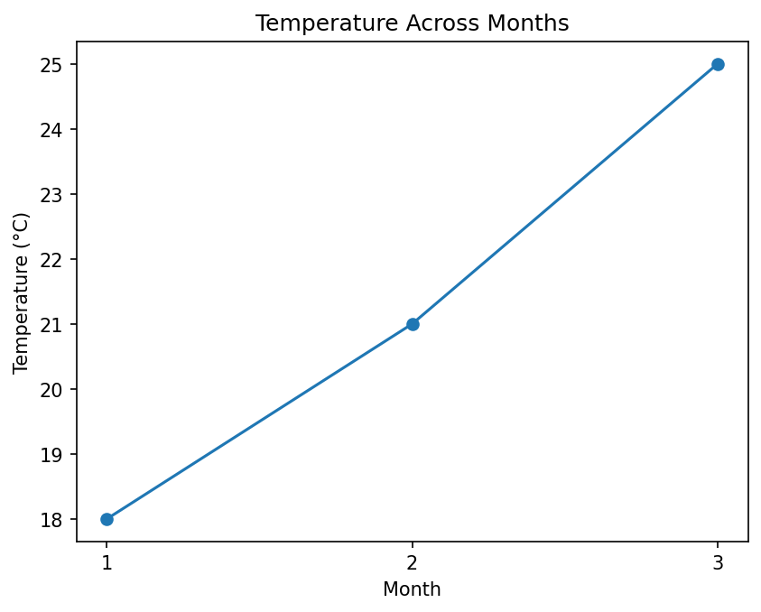
Common Plot Types for Coordinate Data
| Plot Type | Function |
|---|---|
| Line graph | plot() |
| Scatter plot | scatter() |
Real-Life Examples of Coordinate Data
- student marks across subjects
- monthly rainfall
- yearly population growth
- temperature across months
- company sales across years
In each example there is one thing that changes along the x-axis (subject, month or year) and one measured value for it on the y-axis.
2. Grid or Matrix Data¶
Meaning
Grid or matrix data consists of values arranged in:
- rows
- columns
Each position in the grid holds one value. To find a value, you need two pieces of information: its row and its column. This type of data looks like a table.
Example
Suppose temperature is recorded for several cities:
| City / Month | Jan | Feb | Mar |
|---|---|---|---|
| Delhi | 18 | 21 | 25 |
| Ranchi | 15 | 19 | 22 |
| Mumbai | 26 | 28 | 30 |
This can be represented in Python as a list of lists, where each inner list is one row:
[
[18, 21, 25],
[15, 19, 22],
[26, 28, 30]
]
This is called a matrix or grid. It has 3 rows and 3 columns, so its shape is (3, 3). The value 22, for example, is in row 1 (Ranchi) and column 2 (Mar), counting from 0.
Script: Displaying the Temperature Grid
The script below stores the table as a NumPy matrix and displays it with imshow(). Each cell of the matrix becomes a colored square.
Step 1 - Import the required libraries
# Step 1 - Import the required libraries
import matplotlib.pyplot as plt # For drawing the graph
import numpy as np # For creating the matrix (a 2-D array)
Step 2 - Create the matrix data
# Step 2 - Create the matrix data
# This is a 3 x 3 matrix. Each ROW is one city and each COLUMN is one month.
# Jan Feb Mar
data = np.array([
[18, 21, 25], # Delhi
[15, 19, 22], # Ranchi
[26, 28, 30], # Mumbai
])
cities = ["Delhi", "Ranchi", "Mumbai"]
months = ["Jan", "Feb", "Mar"]
print("Matrix data:")
print(data)
print("Shape (rows, columns):", data.shape)
Output of this step:
Matrix data:
[[18 21 25]
[15 19 22]
[26 28 30]]
Shape (rows, columns): (3, 3)
Step 3 - Read one value using its row and column position
# Step 3 - Read one value using its row and column position
# Counting starts at 0, so row 1 is Ranchi and column 2 is Mar.
print()
print("Temperature in", cities[1], "in", months[2], "=", data[1, 2])
Output of this step:
Temperature in Ranchi in Mar = 22
Step 4 - Display the matrix using colors
# Step 4 - Display the matrix using colors
# imshow() gives each cell a color. The color depends on the value in that cell.
# In the default color scheme (called "viridis"), low values are dark purple
# and high values are yellow.
plt.imshow(data)
Step 5 - Add a title, labels, city and month names, and a color bar
# Step 5 - Add a title, labels, city and month names, and a color bar
plt.title("Temperature Grid")
plt.xlabel("Month")
plt.ylabel("City")
plt.xticks(ticks=range(3), labels=months) # Replace 0, 1, 2 with month names
plt.yticks(ticks=range(3), labels=cities) # Replace 0, 1, 2 with city names
plt.colorbar(label="Temperature (°C)") # The color bar works like a key for the colors
Step 6 - Write the value inside each cell (optional, but helpful for beginners)
# Step 6 - Write the value inside each cell (optional, but helpful for beginners)
# The outer loop moves down the rows. The inner loop moves across the columns.
# Note that plt.text() takes the x-position (column) first and the y-position (row) second.
# Dark cells get white text and light cells get black text, so the numbers stay readable.
for row in range(3):
for col in range(3):
value = data[row, col]
if value < 24:
text_color = "white"
else:
text_color = "black"
plt.text(col, row, value, ha="center", va="center", color=text_color)
Step 7 - Display the graph
# Step 7 - Display the graph
plt.show()
Complete script:
# Step 1 - Import the required libraries
import matplotlib.pyplot as plt # For drawing the graph
import numpy as np # For creating the matrix (a 2-D array)
# Step 2 - Create the matrix data
# This is a 3 x 3 matrix. Each ROW is one city and each COLUMN is one month.
# Jan Feb Mar
data = np.array([
[18, 21, 25], # Delhi
[15, 19, 22], # Ranchi
[26, 28, 30], # Mumbai
])
cities = ["Delhi", "Ranchi", "Mumbai"]
months = ["Jan", "Feb", "Mar"]
print("Matrix data:")
print(data)
print("Shape (rows, columns):", data.shape)
# Step 3 - Read one value using its row and column position
# Counting starts at 0, so row 1 is Ranchi and column 2 is Mar.
print()
print("Temperature in", cities[1], "in", months[2], "=", data[1, 2])
# Step 4 - Display the matrix using colors
# imshow() gives each cell a color. The color depends on the value in that cell.
# In the default color scheme (called "viridis"), low values are dark purple
# and high values are yellow.
plt.imshow(data)
# Step 5 - Add a title, labels, city and month names, and a color bar
plt.title("Temperature Grid")
plt.xlabel("Month")
plt.ylabel("City")
plt.xticks(ticks=range(3), labels=months) # Replace 0, 1, 2 with month names
plt.yticks(ticks=range(3), labels=cities) # Replace 0, 1, 2 with city names
plt.colorbar(label="Temperature (°C)") # The color bar works like a key for the colors
# Step 6 - Write the value inside each cell (optional, but helpful for beginners)
# The outer loop moves down the rows. The inner loop moves across the columns.
# Note that plt.text() takes the x-position (column) first and the y-position (row) second.
# Dark cells get white text and light cells get black text, so the numbers stay readable.
for row in range(3):
for col in range(3):
value = data[row, col]
if value < 24:
text_color = "white"
else:
text_color = "black"
plt.text(col, row, value, ha="center", va="center", color=text_color)
# Step 7 - Display the graph
plt.show()
Output:
Matrix data:
[[18 21 25]
[15 19 22]
[26 28 30]]
Shape (rows, columns): (3, 3)
Temperature in Ranchi in Mar = 22
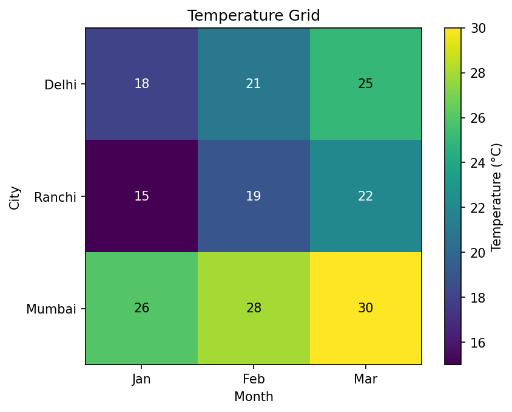
Mumbai's row is the brightest because it is the warmest city. Ranchi in January is the darkest cell because it holds the lowest value (15).
Common Plot Types for Grid/Matrix Data
| Plot Type | Function |
|---|---|
| Heat map style plot | imshow() |
| Contour plot | contour() |
| Filled contour plot | contourf() |
A heat map is a grid of colored cells in which the color shows the size of each value. See Heat map (Wikipedia).
Real-Life Examples of Grid or Matrix Data
- temperature across cities and months
- passenger counts across months and years
- a digital photograph, where each pixel (tiny dot of color) sits in a row and a column
- a school timetable (days as rows, periods as columns)
- a height map of land, with a height value at every point of a grid
Comparison Between Coordinate Data and Grid Data¶
| Feature | Coordinate Data | Grid / Matrix Data |
|---|---|---|
| Structure | X–Y pairs | Rows and columns |
| Example | Month vs temperature | City × Month temperature |
| Shape | Separate lists/arrays | Matrix/table |
| Values needed to locate one reading | One (the x-value) | Two (the row and the column) |
| How it is stored in Python | Two 1-D lists or arrays of the same length | One 2-D array (or a DataFrame) |
| Common Methods | plot(), scatter() |
imshow(), contour() |
Flowchart: Types of Plot Data¶
The flowchart below shows how to decide which kind of data you have and which method to use.
flowchart TD
A[Look at how the values are arranged] --> B{Is each reading a pair of x and y values}
B -->|Yes| C[Coordinate data]
B -->|No| D{Are the values arranged in rows and columns}
D -->|Yes| E[Grid or matrix data]
D -->|No| F[Reorganize the data first, for example with pivot]
F --> E
C --> G{What should the graph show}
G -->|Trend or change over time| H[Use plot]
G -->|Separate points or a relationship| I[Use scatter]
E --> J{What should the graph show}
J -->|Each value as a colored cell| K[Use imshow]
J -->|Lines or bands of equal value| L[Use contour or contourf]
Important Note on Two Variables¶
Important:
Having two variables does not automatically mean grid data.
For example:
Month and temperature contain two variables, but they are usually plotted as coordinate data.
Grid data occurs when values are arranged in rows and columns.
A simple way to tell them apart is to count the labels needed to find one reading:
- "Temperature in March" needs one label (the month). This is coordinate data. Its two variables are the month and the temperature.
- "Temperature in Ranchi in March" needs two labels (the city and the month). This is grid data. It has three variables: city, month and temperature. Two of them decide the position in the grid, and the third is the value stored in the cell.
Answer to Q2: Purpose of plot(), scatter(), imshow() and contour()¶
1. plot()¶
Purpose
plot() is used to create a line graph. It draws a point for each (x, y) pair and joins the points with straight lines, in the order in which they are given. See matplotlib.pyplot.plot.
Kind of Data Accepted
Coordinate data: a list or array of x-values and a list or array of y-values of the same length. If you give only one list, such as plt.plot([10, 20, 15]), Matplotlib uses it as the y-values and uses 0, 1, 2, ... as the x-values.
Best Use
It is useful for showing:
- trends
- growth
- increase or decrease over time
Simplified Syntax
plt.plot(x_values, y_values)
Example
# Step 1 - Import matplotlib
import matplotlib.pyplot as plt
# Step 2 - Create the data (two lists of equal length)
x = [1, 2, 3, 4]
y = [10, 20, 15, 30]
print("Points to be joined:", list(zip(x, y)))
# Step 3 - Plot the line graph
plt.plot(x, y)
# Step 4 - Add a title and labels
plt.title("A Simple Line Graph")
plt.xlabel("x values")
plt.ylabel("y values")
# Step 5 - Display the graph
plt.show()
Output
Points to be joined: [(1, 10), (2, 20), (3, 15), (4, 30)]
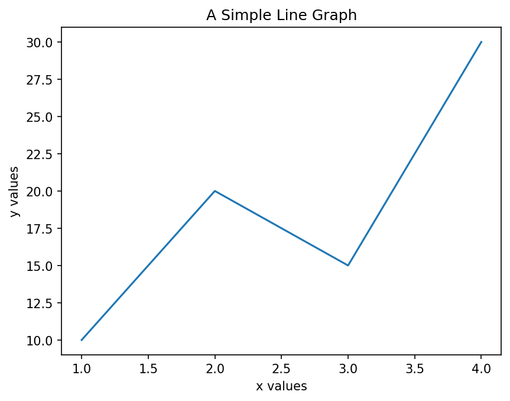
Typical Uses
- sales trend
- rainfall trend
- stock prices
- student performance
2. scatter()¶
Purpose
scatter() is used to create a scatter plot. It displays individual points without joining them. See matplotlib.pyplot.scatter.
Kind of Data Accepted
Coordinate data: a list or array of x-values and a list or array of y-values of the same length. It can also accept extra lists to set the size (s) or color (c) of each point.
Best Use
It is useful for studying:
- relationships
- clustering (points gathering in groups)
- spread of data
Simplified Syntax
plt.scatter(x_values, y_values)
Example
# Step 1 - Import matplotlib
import matplotlib.pyplot as plt
# Step 2 - Create the data
# Each position in the two lists belongs to one person.
height = [150, 155, 160, 165] # Height in cm
weight = [45, 50, 52, 60] # Weight in kg
print("(height, weight) pairs:", list(zip(height, weight)))
# Step 3 - Create the scatter plot (points are NOT joined)
plt.scatter(height, weight)
# Step 4 - Add a title and labels
plt.title("Height vs Weight")
plt.xlabel("Height (cm)")
plt.ylabel("Weight (kg)")
# Step 5 - Display the graph
plt.show()
Output
(height, weight) pairs: [(150, 45), (155, 50), (160, 52), (165, 60)]
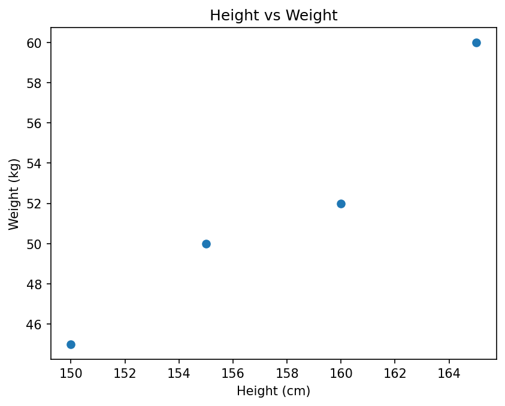
The points rise from left to right, so taller people in this small sample tend to weigh more.
Typical Uses
- height vs weight
- study time vs marks
- advertising cost vs sales
3. imshow()¶
Purpose
imshow() displays matrix values using colors. The name is short for "image show". Larger values and smaller values are shown with different colors. See matplotlib.pyplot.imshow.
Kind of Data Accepted
Grid or matrix data: a 2-D array of numbers with shape (rows, columns). Each value becomes one colored square. It can also accept a 3-D array that holds the red, green and blue parts of every pixel, which is how a color photograph is stored.
Best Use
It is useful for:
- images
- heat maps
- matrix data
Simplified Syntax
plt.imshow(matrix)
Example
# Step 1 - Import the libraries
import matplotlib.pyplot as plt
import numpy as np
# Step 2 - Create 25 numbers from 0 to 24 in a single row (a 1-D array)
data = np.arange(25)
print("Before reshape, shape =", data.shape)
# Step 3 - Convert the single row into a matrix of 5 rows and 5 columns
data = data.reshape(5, 5)
print("After reshape, shape =", data.shape)
print(data)
# Step 4 - Display the matrix as colors, with a color bar as the key
plt.imshow(data)
plt.colorbar()
plt.title("Numbers 0 to 24 Shown as Colors")
# Step 5 - Display the graph
plt.show()
Output
Before reshape, shape = (25,)
After reshape, shape = (5, 5)
[[ 0 1 2 3 4]
[ 5 6 7 8 9]
[10 11 12 13 14]
[15 16 17 18 19]
[20 21 22 23 24]]
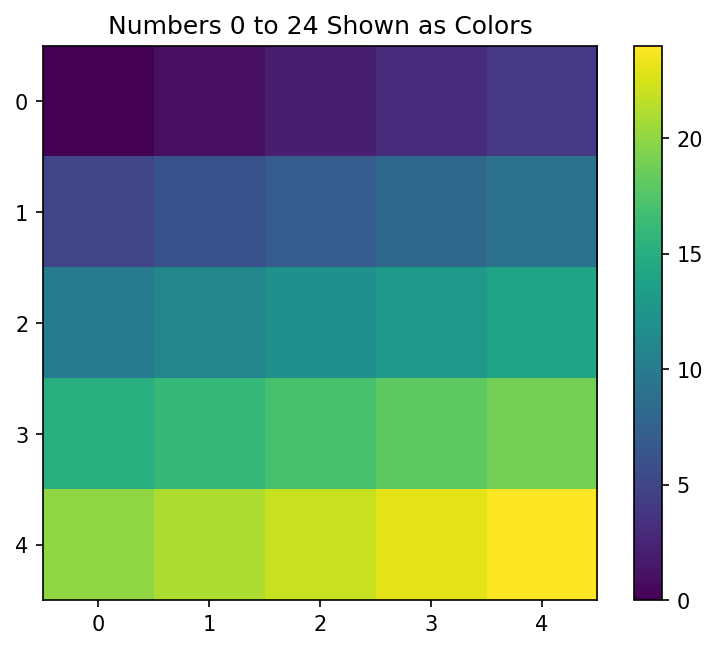
The top-left cell (0) is the darkest and the bottom-right cell (24) is the brightest, because the values increase from left to right and from top to bottom.
4. contour()¶
Purpose
contour() draws lines joining places that have the same value. These lines are called contour lines. You may have seen them on maps, where each line joins places at the same height above sea level. See Contour line (Wikipedia) and matplotlib.pyplot.contour.
A closely related method, contourf(), fills the space between the contour lines with color. The "f" stands for "filled". See matplotlib.pyplot.contourf.
Kind of Data Accepted
Grid or matrix data: a 2-D array Z of values. Optionally, you can also give the matching x and y positions, either as two 1-D arrays or as two 2-D arrays X and Y of the same shape as Z. If X and Y are left out, Matplotlib uses the column numbers as x and the row numbers as y.
Best Use
It is useful for:
- weather maps
- height maps
- pressure maps
Simplified Syntax
plt.contour(X, Y, Z)
Example
In this example, np.meshgrid() builds the grid of (x, y) positions. See numpy.meshgrid.
# Step 1 - Import the libraries
import numpy as np
import matplotlib.pyplot as plt
# Step 2 - Create 50 evenly spaced x-values and 50 y-values from -3 to 3
x = np.linspace(-3, 3, 50)
y = np.linspace(-3, 3, 50)
print("x has", len(x), "values; y has", len(y), "values")
# Step 3 - Create a coordinate grid
# meshgrid() builds two matrices. X holds the x-value of every grid point
# and Y holds the y-value of every grid point.
X, Y = np.meshgrid(x, y)
print("Shape of X:", X.shape, " Shape of Y:", Y.shape)
# Step 4 - Calculate a "height" value Z for every grid point
Z = np.sin(X) * np.cos(Y)
print("Shape of Z:", Z.shape)
print("Smallest Z:", round(Z.min(), 3), " Largest Z:", round(Z.max(), 3))
# Step 5 - Draw the contour lines and label each line with its value
lines = plt.contour(X, Y, Z)
plt.clabel(lines, fontsize=8) # Write the value on each contour line
plt.title("Contour Plot of Z = sin(X) * cos(Y)")
plt.xlabel("X")
plt.ylabel("Y")
# Step 6 - Display the graph
plt.show()
Output
x has 50 values; y has 50 values
Shape of X: (50, 50) Shape of Y: (50, 50)
Shape of Z: (50, 50)
Smallest Z: -0.997 Largest Z: 0.997
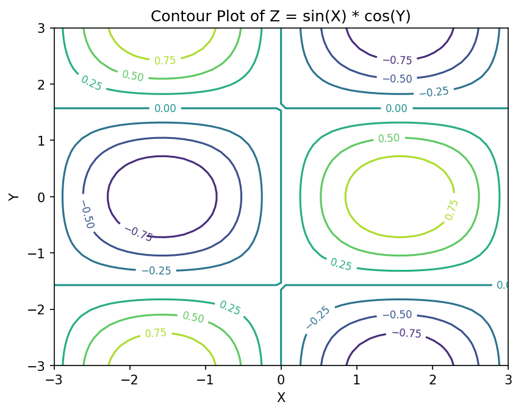
Each closed loop surrounds a "hill" (positive values) or a "valley" (negative values). The number written on each line is the value of Z all along that line.
Comparison of Plotting Methods¶
| Method | Type of Data | Data Accepted | Best Use |
|---|---|---|---|
plot() |
Coordinate data | x and y lists or arrays of equal length | Trends |
scatter() |
Coordinate data | x and y lists or arrays of equal length | Relationships |
imshow() |
Matrix data | One 2-D array | Heat maps |
contour() |
Matrix data | One 2-D array Z, with optional X and Y | Equal-value regions |
Common Beginner Error: Passing a 1-D List to imshow()¶
# WRONG EXAMPLE
# A 1-D list is passed to imshow()
# data = [1, 2, 3, 4]
# plt.imshow(data)
# This causes an error because
# imshow() expects matrix-style data
The script below shows the actual error and the fix.
import matplotlib.pyplot as plt
import numpy as np
# WRONG: a 1-D list has only one dimension (a single row of numbers)
data = [1, 2, 3, 4]
try:
plt.imshow(data)
except TypeError as error:
print("Error:", error)
# RIGHT: reshape the numbers into 2 rows and 2 columns first
data = np.array([1, 2, 3, 4]).reshape(2, 2)
print("Reshaped data:")
print(data)
plt.imshow(data) # This works, because data is now a matrix
plt.show()
Output
Error: Invalid shape (4,) for image data
Reshaped data:
[[1 2]
[3 4]]
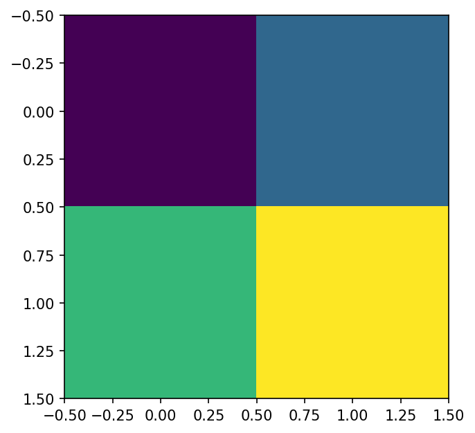
[1, 2, 3, 4] has shape (4,), which means only one dimension. imshow() needs at least two dimensions (rows and columns), so it raises a TypeError. Reshaping the list into 2 rows and 2 columns solves the problem.
Answer to Q3: Role of Matrix Slicing in NumPy¶
Meaning of Matrix Slicing¶
Matrix slicing means extracting a selected portion of a matrix.
Sometimes the entire matrix is not required.
A programmer may need:
- only selected rows
- only selected columns
- a smaller section of data
Instead of manually copying values, NumPy allows easy extraction using slicing. A slice is written inside square brackets and uses a colon : to give a range of positions. See Indexing on ndarrays (NumPy).
Why Matrix Slicing Is Important¶
Matrix slicing is useful because:
- it helps focus on selected data
- it reduces unnecessary processing
- it allows comparison of specific regions
- it makes visualization easier
For example:
Suppose passenger data is available from:
1949 to 1960
But analysis is required only for:
1952 to 1958
Instead of using the complete dataset, only the required rows may be extracted. This is exactly what Task 3 of Part B does.
Example Matrix¶
Suppose the following matrix is given:
# Step 1 - Import NumPy
import numpy as np
# Step 2 - Create the numbers 0 to 24 and arrange them as a 5 x 5 matrix
A = np.arange(25)
A = A.reshape(5, 5)
# Step 3 - Display the matrix
print("Matrix A:")
print(A)
Output
Matrix A:
[[ 0 1 2 3 4]
[ 5 6 7 8 9]
[10 11 12 13 14]
[15 16 17 18 19]
[20 21 22 23 24]]
np.arange(25) creates the numbers 0 to 24 in a single row. reshape(5, 5) arranges them into 5 rows and 5 columns. See numpy.arange and numpy.reshape.
The same matrix with its row and column index numbers written in:
| Col 0 | Col 1 | Col 2 | Col 3 | Col 4 | |
|---|---|---|---|---|---|
| Row 0 | 0 | 1 | 2 | 3 | 4 |
| Row 1 | 5 | 6 | 7 | 8 | 9 |
| Row 2 | 10 | 11 | 12 | 13 | 14 |
| Row 3 | 15 | 16 | 17 | 18 | 19 |
| Row 4 | 20 | 21 | 22 | 23 | 24 |
General Syntax of Matrix Slicing¶
matrix[row_start:row_end, column_start:column_end]
The part before the comma selects rows. The part after the comma selects columns.
Meaning of Terms
| Part | Meaning | If left out |
|---|---|---|
| row_start | Starting row index (included) | Starts from the first row (row 0) |
| row_end | Ending row index (excluded) | Goes up to and including the last row |
| column_start | Starting column index (included) | Starts from the first column (column 0) |
| column_end | Ending column index (excluded) | Goes up to and including the last column |
A colon on its own, :, leaves out both the start and the end, so it means everything along that direction.
How to write a slice, step by step:
- Decide the first and last row you want. Write the first row index as
row_start. - Add 1 to the last row index and write it as
row_end, because the end is not included. - Do the same for columns, or write
:if you want all columns. - Put the row part and the column part inside square brackets, separated by a comma.
- Print the result and check its shape.
Example 1: Extract Selected Rows¶
# Example 1 - Extract rows 1, 2 and 3 (all columns)
B = A[1:4, :]
print("A[1:4, :]")
print(B)
Explanation
1:4 means:
- start at row index 1
- stop before row index 4
So rows 1, 2 and 3 are selected.
: means:
select all columns
Output
A[1:4, :]
[[ 5 6 7 8 9]
[10 11 12 13 14]
[15 16 17 18 19]]
Example 2: Extract Selected Columns¶
# Example 2 - Extract columns 1, 2 and 3 (all rows)
B = A[:, 1:4]
print("A[:, 1:4]")
print(B)
Explanation
: before the comma means: all rows
1:4 after the comma means: columns 1, 2 and 3 (column 4 is not included)
Output
A[:, 1:4]
[[ 1 2 3]
[ 6 7 8]
[11 12 13]
[16 17 18]
[21 22 23]]
Example 3: Extract a Smaller Matrix¶
# Example 3 - Extract the middle section: rows 1 to 3 and columns 1 to 3
B = A[1:4, 1:4]
print("A[1:4, 1:4]")
print(B)
Explanation
1:4 before the comma selects rows 1, 2 and 3. 1:4 after the comma selects columns 1, 2 and 3. The result is the 3 × 3 block in the middle of the matrix, shown in bold below.
| Col 0 | Col 1 | Col 2 | Col 3 | Col 4 | |
|---|---|---|---|---|---|
| Row 0 | 0 | 1 | 2 | 3 | 4 |
| Row 1 | 5 | 6 | 7 | 8 | 9 |
| Row 2 | 10 | 11 | 12 | 13 | 14 |
| Row 3 | 15 | 16 | 17 | 18 | 19 |
| Row 4 | 20 | 21 | 22 | 23 | 24 |
Output
A[1:4, 1:4]
[[ 6 7 8]
[11 12 13]
[16 17 18]]
All four blocks above as one script:
# Step 1 - Import NumPy
import numpy as np
# Step 2 - Create the numbers 0 to 24 and arrange them as a 5 x 5 matrix
A = np.arange(25)
A = A.reshape(5, 5)
# Step 3 - Display the matrix
print("Matrix A:")
print(A)
# Example 1 - Extract rows 1, 2 and 3 (all columns)
B = A[1:4, :]
print("A[1:4, :]")
print(B)
# Example 2 - Extract columns 1, 2 and 3 (all rows)
B = A[:, 1:4]
print("A[:, 1:4]")
print(B)
# Example 3 - Extract the middle section: rows 1 to 3 and columns 1 to 3
B = A[1:4, 1:4]
print("A[1:4, 1:4]")
print(B)
Flowchart: Matrix Slicing¶
flowchart TD
A[Start with a matrix] --> B[Decide the first and last row needed]
B --> C[row_start = first row index]
C --> D[row_end = last row index plus 1]
D --> E{Are all columns needed}
E -->|Yes| F[Use a single colon for the columns]
E -->|No| G[column_start = first column index and column_end = last column index plus 1]
F --> H[Write matrix with row part, comma, column part inside square brackets]
G --> H
H --> I[Print the result and check its shape]
Small Concept Script¶
# Step 1 - Import NumPy
import numpy as np
# Step 2 - Create the numbers 0 to 35
matrix = np.arange(36)
# Step 3 - Convert them into a 6 x 6 matrix
matrix = matrix.reshape(6, 6)
# Step 4 - Display the full matrix
print("Original Matrix")
print(matrix)
# Step 5 - Slice a smaller section
# Rows 2, 3, 4 (stop before 5) and columns 1, 2, 3 (stop before 4)
small_matrix = matrix[2:5, 1:4]
# Step 6 - Display the sliced matrix and compare the shapes
print()
print("Sliced Matrix")
print(small_matrix)
print()
print("Shape of original matrix:", matrix.shape)
print("Shape of sliced matrix :", small_matrix.shape)
Output
Original Matrix
[[ 0 1 2 3 4 5]
[ 6 7 8 9 10 11]
[12 13 14 15 16 17]
[18 19 20 21 22 23]
[24 25 26 27 28 29]
[30 31 32 33 34 35]]
Sliced Matrix
[[13 14 15]
[19 20 21]
[25 26 27]]
Shape of original matrix: (6, 6)
Shape of sliced matrix : (3, 3)
Rows 2, 3 and 4 and columns 1, 2 and 3 are selected, so the sliced matrix has shape (3, 3).
Common Beginner Error: Index Out of Range¶
# WRONG EXAMPLE
# Trying to access invalid index
# matrix = np.arange(25).reshape(5, 5)
# print(matrix[10])
# IndexError occurs because
# row 10 does not exist
The script below shows the actual error message, the correct way to reach the last row, and one point that often surprises beginners.
import numpy as np
matrix = np.arange(25).reshape(5, 5) # Valid row positions are 0, 1, 2, 3, 4
# WRONG: row 10 does not exist
try:
print(matrix[10])
except IndexError as error:
print("Error:", error)
# RIGHT: the last row can be reached with index 4, or with -1
print("Last row using index 4 :", matrix[4])
print("Last row using index -1:", matrix[-1])
# Note: a SLICE that goes past the end does not cause an error.
# NumPy simply stops at the last row.
print("matrix[3:10] gives:")
print(matrix[3:10])
Output
Error: index 10 is out of bounds for axis 0 with size 5
Last row using index 4 : [20 21 22 23 24]
Last row using index -1: [20 21 22 23 24]
matrix[3:10] gives:
[[15 16 17 18 19]
[20 21 22 23 24]]
A 5 × 5 matrix has rows 0 to 4 only, so matrix[10] raises an IndexError. A slice such as matrix[3:10] is more forgiving: it does not raise an error, but simply stops at the last available row. A negative index counts from the end, so -1 means the last row.
Important Note: The Ending Index Is Not Included¶
Remember:
In slicing, the ending index is not included.
Example: A[1:4] means rows 1, 2, 3, not 1, 2, 3, 4.
A handy check: the number of rows selected is always row_end - row_start. For A[1:4], that is 4 - 1 = 3 rows.
Follow-up Questions on Slicing¶
Use the 5 × 5 matrix A from the examples above.
Question 3.1: What do A[2, 3], A[2] and A[:, 0] give?
Show answer
Step 1 - `A[2, 3]` has no colons, so it picks a single value: row 2, column 3, which is 13. Step 2 - `A[2]` gives only a row number, so it picks the whole of row 2. Step 3 - `A[:, 0]` takes all rows but only column 0, so it picks the first column.Question 3.2: How would you extract the bottom-right 2 × 2 corner without counting the size of the matrix?
Show answer
Use negative indexes. `-2:` means "from the second-last position to the end". So `A[-2:, -2:]` gives the last two rows and the last two columns.Question 3.3: A slice can have a third number, the step, as in start:end:step. What does A[::2, ::2] give?
Show answer
`::2` means "from the start to the end, taking every second item". So `A[::2, ::2]` takes rows 0, 2, 4 and columns 0, 2, 4.The script below checks all three answers.
import numpy as np
A = np.arange(25).reshape(5, 5)
print("A[2, 3] =", A[2, 3])
print("A[2] =", A[2])
print("A[:, 0] =", A[:, 0])
print("A[-2:, -2:] =")
print(A[-2:, -2:])
print("A[::2, ::2] =")
print(A[::2, ::2])
Output
A[2, 3] = 13
A[2] = [10 11 12 13 14]
A[:, 0] = [ 0 5 10 15 20]
A[-2:, -2:] =
[[18 19]
[23 24]]
A[::2, ::2] =
[[ 0 2 4]
[10 12 14]
[20 22 24]]
Comparison of the Four Methods¶
Compare the Following Methods in Tabular Form¶
| Method | Type of Data | Main Purpose | Typical Use |
|---|---|---|---|
plot() |
Coordinate Data | Draws line graph | Trends over time |
scatter() |
Coordinate Data | Shows separate points | Relationship analysis |
imshow() |
Grid / Matrix Data | Displays values using colors | Heat maps, images |
contour() |
Grid / Matrix Data | Draws equal-value lines | Weather and height maps |
Additional Comparison¶
| Feature | plot() |
scatter() |
imshow() |
contour() |
|---|---|---|---|---|
| Joins points | Yes | No | No | No |
| Uses colors | Limited | Limited | Yes | Yes |
| Matrix data | No | No | Yes | Yes |
| Best for | Trends | Relationships | Heat maps | Regions/levels |
"Limited" use of color means that plot() and scatter() normally draw in one color per line or per set of points. scatter() can color each point separately if you give it a c argument, but color is not its main way of showing values. In imshow() and contour(), color is the main way of showing the values.
Solution to Part B¶
The six tasks follow one path. The flights data starts as a long table, is reshaped into a matrix, is sliced, and is then plotted in two different ways.
flowchart TD
A[Task 1 - Load the flights table with 144 rows] --> B[Task 2 - Pivot into a 12 by 12 matrix]
B --> C[Task 3 - Convert to a NumPy array and slice the years 1952 to 1958]
A --> D[Task 4 - Pick one year and plot it as coordinate data]
D --> E[Line plot and scatter plot]
C --> F[Task 5 - Plot the sliced matrix as grid data]
F --> G[imshow and contourf]
E --> H[Task 6 - Compare the graphs]
G --> H
Solution to Task 1: Load the Dataset¶
Objective
To load the flights dataset from Seaborn and understand its columns.
The flights dataset records the number of passengers (in thousands) who travelled each month with an airline from January 1949 to December 1960. It is a classic dataset, made famous by the statisticians Box and Jenkins in their book on time series analysis. A time series is a set of values recorded one after another over time. See Time series (Wikipedia).
Script, step by step
Step 1 - Import the required library
# Step 1 - Import the required library
# Seaborn comes with several practice datasets, including 'flights'.
import seaborn as sns
Step 2 - Load the flights dataset
# Step 2 - Load the flights dataset
# This dataset contains monthly passenger counts for an airline from 1949 to 1960.
# It is loaded as a pandas DataFrame (a table with rows and columns).
df = sns.load_dataset("flights")
Step 3 - Display the first five rows
# Step 3 - Display the first five rows
# head() shows the top five rows, so we get a quick look at the structure of the data.
print(df.head())
Output of this step:
year month passengers
0 1949 Jan 112
1 1949 Feb 118
2 1949 Mar 132
3 1949 Apr 129
4 1949 May 121
Step 4 - Display the column names, the size of the table and the data type of each column
# Step 4 - Display the column names, the size of the table and the data type of each column
print()
print(df.columns)
print()
print("Number of rows and columns:", df.shape)
print()
print(df.dtypes)
Output of this step:
Index(['year', 'month', 'passengers'], dtype='str')
Number of rows and columns: (144, 3)
year int64
month category
passengers int64
dtype: object
Step 5 - Look at the range of values in each column
# Step 5 - Look at the range of values in each column
print()
print("First year :", df["year"].min())
print("Last year :", df["year"].max())
print("Months :", list(df["month"].unique()))
print("Fewest passengers in a month:", df["passengers"].min())
print("Most passengers in a month :", df["passengers"].max())
Output of this step:
First year : 1949
Last year : 1960
Months : ['Jan', 'Feb', 'Mar', 'Apr', 'May', 'Jun', 'Jul', 'Aug', 'Sep', 'Oct', 'Nov', 'Dec']
Fewest passengers in a month: 104
Most passengers in a month : 622
Complete script for Task 1
# Step 1 - Import the required library
# Seaborn comes with several practice datasets, including 'flights'.
import seaborn as sns
# Step 2 - Load the flights dataset
# This dataset contains monthly passenger counts for an airline from 1949 to 1960.
# It is loaded as a pandas DataFrame (a table with rows and columns).
df = sns.load_dataset("flights")
# Step 3 - Display the first five rows
# head() shows the top five rows, so we get a quick look at the structure of the data.
print(df.head())
# Step 4 - Display the column names, the size of the table and the data type of each column
print()
print(df.columns)
print()
print("Number of rows and columns:", df.shape)
print()
print(df.dtypes)
# Step 5 - Look at the range of values in each column
print()
print("First year :", df["year"].min())
print("Last year :", df["year"].max())
print("Months :", list(df["month"].unique()))
print("Fewest passengers in a month:", df["passengers"].min())
print("Most passengers in a month :", df["passengers"].max())
Output
year month passengers
0 1949 Jan 112
1 1949 Feb 118
2 1949 Mar 132
3 1949 Apr 129
4 1949 May 121
Index(['year', 'month', 'passengers'], dtype='str')
Number of rows and columns: (144, 3)
year int64
month category
passengers int64
dtype: object
First year : 1949
Last year : 1960
Months : ['Jan', 'Feb', 'Mar', 'Apr', 'May', 'Jun', 'Jul', 'Aug', 'Sep', 'Oct', 'Nov', 'Dec']
Fewest passengers in a month: 104
Most passengers in a month : 622
Explanation of Columns
| Column | Meaning | Data type in pandas | Example |
|---|---|---|---|
| year | Year of travel | Whole number (int64) |
1949 |
| month | Month name | Category (category), with its categories listed in calendar order |
Jan |
| passengers | Number of passengers who flew in that month, in thousands | Whole number (int64) |
112 |
Understanding the output
- The dataset has 144 rows, because it covers 12 years × 12 months.
- The numbers 0, 1, 2, ... on the left of the first output are the row index created by pandas. They are row labels, not a column of data.
- The
monthcolumn is stored as a category. A category column remembers its list of allowed values and their order (Jan to Dec). This matters in Task 2. See Categorical data (pandas). - The data is in long form: each row holds just one reading. This is the natural shape for coordinate data, but not for grid data.
Solution to Task 2: Convert Data into Matrix Form¶
Objective
To convert tabular data into grid or matrix form.
Why Conversion Is Needed
Methods such as imshow() and contour() work with matrix-style data.
The flights dataset is originally stored in long table form, with one row for each month of each year.
It must first be converted into:
- rows → years
- columns → months
- values → passengers
The pandas method pivot() does this. It takes one column for the row labels, one column for the column labels, and one column for the values that fill the cells. See pandas DataFrame.pivot.
flowchart LR
A[Long table - year, month, passengers - 144 rows] --> B[pivot with index year, columns month, values passengers]
B --> C[Matrix - 12 rows of years by 12 columns of months]
The small table below shows what pivot() does with the first two months of 1949 and 1950.
| Long form (before) | → | Matrix form (after) | ||||
|---|---|---|---|---|---|---|
| year | month | passengers | year | Jan | Feb | |
| 1949 | Jan | 112 | 1949 | 112 | 118 | |
| 1949 | Feb | 118 | 1950 | 115 | 126 | |
| 1950 | Jan | 115 | ||||
| 1950 | Feb | 126 |
Script, step by step
Step 1 - Import the library
# Step 1 - Import the library
import seaborn as sns
Step 2 - Load the dataset
# Step 2 - Load the dataset
# The 'flights' dataset is in "long" form: one row for every month of every year.
df = sns.load_dataset("flights")
print("Shape of the original table:", df.shape)
Output of this step:
Shape of the original table: (144, 3)
Step 3 - Convert the table into matrix form using pivot()
# Step 3 - Convert the table into matrix form using pivot()
# pivot() reshapes the table so that:
# index="year" -> each unique year becomes one ROW
# columns="month" -> each unique month becomes one COLUMN
# values="passengers" -> the passenger count fills each cell
flights_matrix = df.pivot(
index="year", # Rows: 1949 to 1960
columns="month", # Columns: Jan to Dec
values="passengers", # Cell values: number of passengers
)
Step 4 - Display the matrix and its shape
# Step 4 - Display the matrix and its shape
print(flights_matrix)
print()
print("Shape of the matrix (rows, columns):", flights_matrix.shape)
Output of this step:
month Jan Feb Mar Apr May Jun Jul Aug Sep Oct Nov Dec
year
1949 112 118 132 129 121 135 148 148 136 119 104 118
1950 115 126 141 135 125 149 170 170 158 133 114 140
1951 145 150 178 163 172 178 199 199 184 162 146 166
1952 171 180 193 181 183 218 230 242 209 191 172 194
1953 196 196 236 235 229 243 264 272 237 211 180 201
1954 204 188 235 227 234 264 302 293 259 229 203 229
1955 242 233 267 269 270 315 364 347 312 274 237 278
1956 284 277 317 313 318 374 413 405 355 306 271 306
1957 315 301 356 348 355 422 465 467 404 347 305 336
1958 340 318 362 348 363 435 491 505 404 359 310 337
1959 360 342 406 396 420 472 548 559 463 407 362 405
1960 417 391 419 461 472 535 622 606 508 461 390 432
Shape of the matrix (rows, columns): (12, 12)
Step 5 - Read one value from the matrix using labels
# Step 5 - Read one value from the matrix using labels
# .loc[row_label, column_label] picks one cell by its year and month.
print()
print("Passengers in July 1955:", flights_matrix.loc[1955, "Jul"])
Output of this step:
Passengers in July 1955: 364
Complete script for Task 2
# Step 1 - Import the library
import seaborn as sns
# Step 2 - Load the dataset
# The 'flights' dataset is in "long" form: one row for every month of every year.
df = sns.load_dataset("flights")
print("Shape of the original table:", df.shape)
# Step 3 - Convert the table into matrix form using pivot()
# pivot() reshapes the table so that:
# index="year" -> each unique year becomes one ROW
# columns="month" -> each unique month becomes one COLUMN
# values="passengers" -> the passenger count fills each cell
flights_matrix = df.pivot(
index="year", # Rows: 1949 to 1960
columns="month", # Columns: Jan to Dec
values="passengers", # Cell values: number of passengers
)
# Step 4 - Display the matrix and its shape
print(flights_matrix)
print()
print("Shape of the matrix (rows, columns):", flights_matrix.shape)
# Step 5 - Read one value from the matrix using labels
# .loc[row_label, column_label] picks one cell by its year and month.
print()
print("Passengers in July 1955:", flights_matrix.loc[1955, "Jul"])
Output
Shape of the original table: (144, 3)
month Jan Feb Mar Apr May Jun Jul Aug Sep Oct Nov Dec
year
1949 112 118 132 129 121 135 148 148 136 119 104 118
1950 115 126 141 135 125 149 170 170 158 133 114 140
1951 145 150 178 163 172 178 199 199 184 162 146 166
1952 171 180 193 181 183 218 230 242 209 191 172 194
1953 196 196 236 235 229 243 264 272 237 211 180 201
1954 204 188 235 227 234 264 302 293 259 229 203 229
1955 242 233 267 269 270 315 364 347 312 274 237 278
1956 284 277 317 313 318 374 413 405 355 306 271 306
1957 315 301 356 348 355 422 465 467 404 347 305 336
1958 340 318 362 348 363 435 491 505 404 359 310 337
1959 360 342 406 396 420 472 548 559 463 407 362 405
1960 417 391 419 461 472 535 622 606 508 461 390 432
Shape of the matrix (rows, columns): (12, 12)
Passengers in July 1955: 364
Understanding the output
- The words
month(top-left) andyear(on the line below) are the names of the column labels and the row labels. They are not part of the data. - Every cell is the passenger count for one year and one month. For example, the cell in row 1955 and column Jul holds 364.
- The months appear in calendar order (Jan to Dec) because the
monthcolumn is a category column with that order. Ifmonthwere plain text, pandas would sort the columns alphabetically (Apr, Aug, Dec, ...), and the graphs in Task 5 would jump around the calendar. - Reading across a row shows how travel changes through the months of one year. Reading down a column shows how travel in one month grows over the years.
Solution to Task 3: Matrix Slicing¶
Objective
To extract only selected years (1952 to 1958) from the flights matrix.
Plan
- Build the matrix as in Task 2.
- Convert it into a NumPy array, so that rows and columns can be selected by position.
- Find the row positions of 1952 and 1958.
- Write the slice, remembering that the end position is not included.
- Check the result.
Script, step by step
Step 1 - Import the library and load the dataset
# Step 1 - Import the library and load the dataset
import seaborn as sns
df = sns.load_dataset("flights")
Step 2 - Convert the data into matrix form (years as rows, months as columns)
# Step 2 - Convert the data into matrix form (years as rows, months as columns)
flights_matrix = df.pivot(
index="year", # Rows: years
columns="month", # Columns: months
values="passengers", # Cell values: passenger counts
)
Step 3 - Convert the pandas table into a NumPy array
# Step 3 - Convert the pandas table into a NumPy array
# NumPy arrays use pure position numbers for slicing, in the form [rows, columns].
# The year and month labels are dropped; only the numbers remain.
data = flights_matrix.to_numpy()
print("Shape of the NumPy array:", data.shape)
Output of this step:
Shape of the NumPy array: (12, 12)
Step 4 - Find the row index (position) of each year
# Step 4 - Find the row index (position) of each year
# enumerate() gives a counter (0, 1, 2, ...) along with each year.
print()
print("Row index -> Year")
for position, year in enumerate(flights_matrix.index):
print(f" {position:2d} -> {year}")
Output of this step:
Row index -> Year
0 -> 1949
1 -> 1950
2 -> 1951
3 -> 1952
4 -> 1953
5 -> 1954
6 -> 1955
7 -> 1956
8 -> 1957
9 -> 1958
10 -> 1959
11 -> 1960
Step 5 - Slice the rows for the years 1952 to 1958
# Step 5 - Slice the rows for the years 1952 to 1958
# 1952 is at row index 3 and 1958 is at row index 9.
# The end of a slice is NOT included, so we must write 10 (one more than 9).
# The ':' after the comma means "all columns" (all 12 months).
selected_data = data[3:10, :]
print()
print("Sliced data (years 1952 to 1958, all months):")
print(selected_data)
print()
print("Shape of the sliced data:", selected_data.shape)
Output of this step:
Sliced data (years 1952 to 1958, all months):
[[171 180 193 181 183 218 230 242 209 191 172 194]
[196 196 236 235 229 243 264 272 237 211 180 201]
[204 188 235 227 234 264 302 293 259 229 203 229]
[242 233 267 269 270 315 364 347 312 274 237 278]
[284 277 317 313 318 374 413 405 355 306 271 306]
[315 301 356 348 355 422 465 467 404 347 305 336]
[340 318 362 348 363 435 491 505 404 359 310 337]]
Shape of the sliced data: (7, 12)
Step 6 - Check which years were selected
# Step 6 - Check which years were selected
# Slicing the index (the list of years) in the same way confirms our choice.
selected_years = flights_matrix.index[3:10]
print()
print("Years selected:", list(selected_years))
Output of this step:
Years selected: [1952, 1953, 1954, 1955, 1956, 1957, 1958]
Complete script for Task 3
# Step 1 - Import the library and load the dataset
import seaborn as sns
df = sns.load_dataset("flights")
# Step 2 - Convert the data into matrix form (years as rows, months as columns)
flights_matrix = df.pivot(
index="year", # Rows: years
columns="month", # Columns: months
values="passengers", # Cell values: passenger counts
)
# Step 3 - Convert the pandas table into a NumPy array
# NumPy arrays use pure position numbers for slicing, in the form [rows, columns].
# The year and month labels are dropped; only the numbers remain.
data = flights_matrix.to_numpy()
print("Shape of the NumPy array:", data.shape)
# Step 4 - Find the row index (position) of each year
# enumerate() gives a counter (0, 1, 2, ...) along with each year.
print()
print("Row index -> Year")
for position, year in enumerate(flights_matrix.index):
print(f" {position:2d} -> {year}")
# Step 5 - Slice the rows for the years 1952 to 1958
# 1952 is at row index 3 and 1958 is at row index 9.
# The end of a slice is NOT included, so we must write 10 (one more than 9).
# The ':' after the comma means "all columns" (all 12 months).
selected_data = data[3:10, :]
print()
print("Sliced data (years 1952 to 1958, all months):")
print(selected_data)
print()
print("Shape of the sliced data:", selected_data.shape)
# Step 6 - Check which years were selected
# Slicing the index (the list of years) in the same way confirms our choice.
selected_years = flights_matrix.index[3:10]
print()
print("Years selected:", list(selected_years))
Output
Shape of the NumPy array: (12, 12)
Row index -> Year
0 -> 1949
1 -> 1950
2 -> 1951
3 -> 1952
4 -> 1953
5 -> 1954
6 -> 1955
7 -> 1956
8 -> 1957
9 -> 1958
10 -> 1959
11 -> 1960
Sliced data (years 1952 to 1958, all months):
[[171 180 193 181 183 218 230 242 209 191 172 194]
[196 196 236 235 229 243 264 272 237 211 180 201]
[204 188 235 227 234 264 302 293 259 229 203 229]
[242 233 267 269 270 315 364 347 312 274 237 278]
[284 277 317 313 318 374 413 405 355 306 271 306]
[315 301 356 348 355 422 465 467 404 347 305 336]
[340 318 362 348 363 435 491 505 404 359 310 337]]
Shape of the sliced data: (7, 12)
Years selected: [1952, 1953, 1954, 1955, 1956, 1957, 1958]
Explanation
3:10selects rows3 to 9, since the ending index is excluded.- Row 3 is 1952 and row 9 is 1958, so these are exactly the years we want.
:means: all columns.- Thus
data[3:10, :]means: select rows 3 to 9 and all columns. - The result has shape
(7, 12): 7 years and 12 months. As a check, 10 - 3 = 7 rows.
| Row index | 0 | 1 | 2 | 3 | 4 | 5 | 6 | 7 | 8 | 9 | 10 | 11 |
|---|---|---|---|---|---|---|---|---|---|---|---|---|
| Year | 1949 | 1950 | 1951 | 1952 | 1953 | 1954 | 1955 | 1956 | 1957 | 1958 | 1959 | 1960 |
Selected by 3:10? |
No | No | No | Yes | Yes | Yes | Yes | Yes | Yes | Yes | No | No |
Why convert to a NumPy array?
A NumPy array is sliced purely by position, using the [rows, columns] form from Q3. A pandas DataFrame works differently. Putting two slices inside its square brackets is not allowed. pandas has its own tools for this instead:
| What you want | NumPy array data |
pandas DataFrame flights_matrix |
|---|---|---|
| Rows by position | data[3:10, :] |
flights_matrix.iloc[3:10, :] |
| Rows by label | Not possible (no labels) | flights_matrix.loc[1952:1958, :] |
| Keeps year and month labels | No | Yes |
Note that .loc includes both ends (1952 and 1958), while position-based slicing with [3:10] or .iloc[3:10] leaves out the end. See pandas indexing and selecting data.
Common Error Example
# WRONG EXAMPLE
# Missing conversion to NumPy array
# sliced = flights_matrix[3:10, :]
# This produces an error
# because DataFrame indexing works differently
With pandas 3.0, this line raises an InvalidIndexError. Older versions also raise an error, though its name and message may differ. The fix is either to convert to NumPy first, as in the script, or to use flights_matrix.iloc[3:10, :].
Solution to Task 4: Plot Coordinate Data¶
Objective
To create:
- a line graph using
plot() - a scatter plot using
scatter()
using data for one selected year from the flights dataset.
Why Task 4 Is Important¶
The flights dataset stores passenger information for:
- different years
- different months
When one year is selected, for example 1955:
| Month | Passengers |
|---|---|
| Jan | 242 |
| Feb | 233 |
| Mar | 267 |
| ... | ... |
the data becomes coordinate data (X–Y data). Only one label (the month) is needed to find each value.
Here:
- x-axis → months
- y-axis → passenger count
This type of data can be plotted using:
plot()
scatter()
The script is written in three steps. Each step continues from the previous one, so run them in order (or use the complete script given after the steps).
Step 1 - Load Dataset and Select One Year¶
# Step 1 - Import the required libraries, load the dataset and select one year
import seaborn as sns
import matplotlib.pyplot as plt
# Load the flights dataset. It contains monthly passenger counts for
# a commercial airline from 1949 to 1960.
df = sns.load_dataset("flights")
# Choose the year to study. Here we use 1955 as an example.
selected_year = 1955
# Keep only the rows where the 'year' column equals 1955.
# df["year"] == selected_year gives True for rows of 1955 and False for all others.
# Putting this inside df[ ... ] keeps only the True rows.
year_data = df[df["year"] == selected_year]
# Display the selected data (12 rows, one for each month)
print(year_data)
print()
print("Number of rows selected:", len(year_data))
Output
year month passengers
72 1955 Jan 242
73 1955 Feb 233
74 1955 Mar 267
75 1955 Apr 269
76 1955 May 270
77 1955 Jun 315
78 1955 Jul 364
79 1955 Aug 347
80 1955 Sep 312
81 1955 Oct 274
82 1955 Nov 237
83 1955 Dec 278
Number of rows selected: 12
The numbers 72 to 83 on the left are the original row positions of 1955 in the full table. pandas keeps them after filtering. There are 12 rows, one for each month, so we will get 12 points on each graph.
Step 2 - Create Line Plot Using plot()¶
# Step 2 - Create a line plot using plot()
# Create a new figure 8 inches wide and 4 inches tall.
# A wide figure suits a graph that runs across 12 months.
plt.figure(figsize=(8, 4))
# Draw the line graph:
# x-axis -> the 'month' column (Jan to Dec)
# y-axis -> the 'passengers' column
# marker="o" puts a dot on each month, so the actual data points are visible.
plt.plot(
year_data["month"], # x-values: month names
year_data["passengers"], # y-values: passenger counts
marker="o",
)
# Add a title and axis labels
plt.title("Passenger Trend in 1955")
plt.xlabel("Month") # Label for the x-axis
plt.ylabel("Number of Passengers") # Label for the y-axis
# Add grid lines to make values easier to read
plt.grid(True)
# Find the busiest and the quietest month to check against the graph
busiest = year_data.loc[year_data["passengers"].idxmax()]
quietest = year_data.loc[year_data["passengers"].idxmin()]
print("Busiest month :", busiest["month"], "with", busiest["passengers"], "passengers")
print("Quietest month:", quietest["month"], "with", quietest["passengers"], "passengers")
# Display the graph
plt.show()
Output
Busiest month : Jul with 364 passengers
Quietest month: Feb with 233 passengers
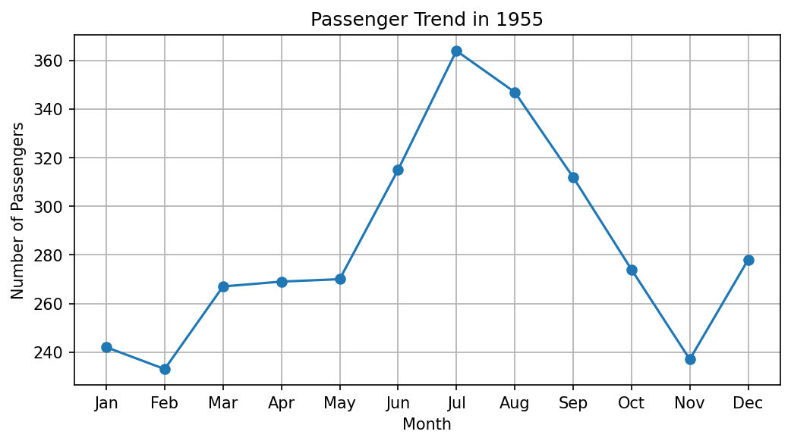
Explanation
plot() joins points using lines.
This helps students observe:
- increasing trend
- decreasing trend
- seasonal variation (a pattern that repeats at the same time every year)
For example:
Passenger count may rise during holiday seasons. In 1955 the count climbs from 233 in February to a peak of 364 in July, the summer holiday season, and then falls to 237 in November before rising again in December.
Here the month names are text, so Matplotlib places them on the x-axis in the order they appear in the data, one step apart.
Step 3 - Create Scatter Plot Using scatter()¶
# Step 3 - Create a scatter plot using scatter() for the same data
plt.figure(figsize=(8, 4))
# Draw the scatter plot. The points are the same 12 points as in Step 2,
# but they are NOT joined by a line.
plt.scatter(
year_data["month"], # x-values: month names
year_data["passengers"], # y-values: passenger counts
)
# Add a title and axis labels
plt.title("Passenger Distribution in 1955")
plt.xlabel("Month")
plt.ylabel("Number of Passengers")
# Add grid lines
plt.grid(True)
print("Number of points plotted:", len(year_data))
# Display the graph
plt.show()
Output
Number of points plotted: 12
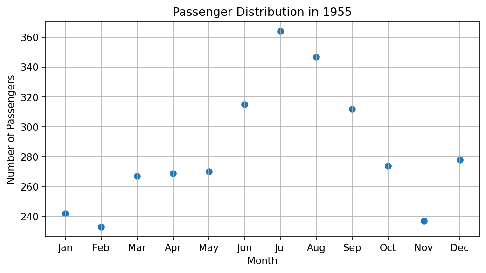
Complete script for Task 4
# Step 1 - Import the required libraries, load the dataset and select one year
import seaborn as sns
import matplotlib.pyplot as plt
# Load the flights dataset. It contains monthly passenger counts for
# a commercial airline from 1949 to 1960.
df = sns.load_dataset("flights")
# Choose the year to study. Here we use 1955 as an example.
selected_year = 1955
# Keep only the rows where the 'year' column equals 1955.
# df["year"] == selected_year gives True for rows of 1955 and False for all others.
# Putting this inside df[ ... ] keeps only the True rows.
year_data = df[df["year"] == selected_year]
# Display the selected data (12 rows, one for each month)
print(year_data)
print()
print("Number of rows selected:", len(year_data))
# Step 2 - Create a line plot using plot()
# Create a new figure 8 inches wide and 4 inches tall.
# A wide figure suits a graph that runs across 12 months.
plt.figure(figsize=(8, 4))
# Draw the line graph:
# x-axis -> the 'month' column (Jan to Dec)
# y-axis -> the 'passengers' column
# marker="o" puts a dot on each month, so the actual data points are visible.
plt.plot(
year_data["month"], # x-values: month names
year_data["passengers"], # y-values: passenger counts
marker="o",
)
# Add a title and axis labels
plt.title("Passenger Trend in 1955")
plt.xlabel("Month") # Label for the x-axis
plt.ylabel("Number of Passengers") # Label for the y-axis
# Add grid lines to make values easier to read
plt.grid(True)
# Find the busiest and the quietest month to check against the graph
busiest = year_data.loc[year_data["passengers"].idxmax()]
quietest = year_data.loc[year_data["passengers"].idxmin()]
print("Busiest month :", busiest["month"], "with", busiest["passengers"], "passengers")
print("Quietest month:", quietest["month"], "with", quietest["passengers"], "passengers")
# Display the graph
plt.show()
# Step 3 - Create a scatter plot using scatter() for the same data
plt.figure(figsize=(8, 4))
# Draw the scatter plot. The points are the same 12 points as in Step 2,
# but they are NOT joined by a line.
plt.scatter(
year_data["month"], # x-values: month names
year_data["passengers"], # y-values: passenger counts
)
# Add a title and axis labels
plt.title("Passenger Distribution in 1955")
plt.xlabel("Month")
plt.ylabel("Number of Passengers")
# Add grid lines
plt.grid(True)
print("Number of points plotted:", len(year_data))
# Display the graph
plt.show()
Output
year month passengers
72 1955 Jan 242
73 1955 Feb 233
74 1955 Mar 267
75 1955 Apr 269
76 1955 May 270
77 1955 Jun 315
78 1955 Jul 364
79 1955 Aug 347
80 1955 Sep 312
81 1955 Oct 274
82 1955 Nov 237
83 1955 Dec 278
Number of rows selected: 12
Busiest month : Jul with 364 passengers
Quietest month: Feb with 233 passengers
Number of points plotted: 12
Comparison Between plot() and scatter()¶
| Feature | plot() |
scatter() |
|---|---|---|
| Joins points | Yes | No |
| Best for | Trend analysis | Relationship analysis |
| Visual appearance | Continuous line | Separate points |
| Easy to observe pattern | Yes | Moderate |
Comparing the two graphs of 1955:
- Both graphs show exactly the same 12 values.
- In the line plot, the rise to July and the fall to November can be seen at a glance, because the line guides the eye from month to month.
- In the scatter plot, the eye must jump from point to point, so the seasonal pattern takes a little longer to notice.
- Months follow each other in time, so joining them with a line makes sense. For this data,
plot()is the better choice. scatter()becomes the better choice when the points have no natural order, for example when comparing height and weight of different people.
Common Error Example: Missing Quotes Around a Column Name¶
# WRONG EXAMPLE
# Missing quotes around column name
# year_data[month]
# This causes NameError
# because month is treated
# as a variable instead of text
The correct form is year_data["month"]. A column name is a piece of text (a string), so it must be written inside quotes. If a variable called month already exists, the wrong form will not raise NameError; it will look for a column named after the value of that variable, which usually gives a KeyError or the wrong data.
Solution to Task 5: Plot Grid or Matrix Data¶
Objective
To visualize matrix-style data using:
imshow()contourf()
Why Task 5 Is Important¶
After conversion into matrix form:
- rows represent years
- columns represent months
- values represent passenger count
The dataset becomes suitable for:
imshow()
contourf()
These methods work with grid or matrix data. Two labels (a year and a month) are needed to find each value.
As in Task 4, the steps continue from each other, and a complete script is given after them.
Step 1 - Create Matrix Data¶
# Step 1 - Import the libraries, create the matrix and slice the selected years
import seaborn as sns
import matplotlib.pyplot as plt
# Load the flights dataset
df = sns.load_dataset("flights")
# Convert into matrix form: years as rows, months as columns, passengers as values
flights_matrix = df.pivot(
index="year", # Rows: years
columns="month", # Columns: months
values="passengers", # Cell values: passenger counts
)
# Convert into a NumPy array so that we can slice by position
data = flights_matrix.to_numpy()
# Slice the rows at index 3 to 9, which are the years 1952 to 1958
selected_data = data[3:10, :]
# Keep the matching labels. We need them to name the ticks on the axes,
# because a NumPy array holds only numbers and no year or month labels.
selected_years = list(flights_matrix.index[3:10]) # [1952, ..., 1958]
month_names = list(flights_matrix.columns) # ['Jan', ..., 'Dec']
print("Shape of selected data:", selected_data.shape)
print("Years :", selected_years)
print("Months:", month_names)
print("Smallest value:", selected_data.min(), " Largest value:", selected_data.max())
Output
Shape of selected data: (7, 12)
Years : [1952, 1953, 1954, 1955, 1956, 1957, 1958]
Months: ['Jan', 'Feb', 'Mar', 'Apr', 'May', 'Jun', 'Jul', 'Aug', 'Sep', 'Oct', 'Nov', 'Dec']
Smallest value: 171 Largest value: 505
A NumPy array keeps only the numbers. So we also save the matching years and month names in selected_years and month_names. Without them, the axes would show only position numbers (0 to 6 and 0 to 11) instead of years and months.
Step 2 - Plot Using imshow()¶
# Step 2 - Plot the matrix using imshow()
plt.figure(figsize=(8, 4))
# Show the matrix as a grid of colored cells.
# Each cell's color depends on the number of passengers in that cell.
# By default, row 0 (the year 1952) is drawn at the TOP, just like a printed table.
image = plt.imshow(selected_data)
# Add a title
plt.title("Passenger Data using imshow()")
# Add a color bar. It works as a key that links each color to a passenger count.
plt.colorbar(image, label="Number of Passengers")
# Add axis labels
plt.xlabel("Months")
plt.ylabel("Years")
# Replace the default position numbers (0, 1, 2, ...) with month names and years
plt.xticks(ticks=range(len(month_names)), labels=month_names)
plt.yticks(ticks=range(len(selected_years)), labels=selected_years)
# Display the graph
plt.show()
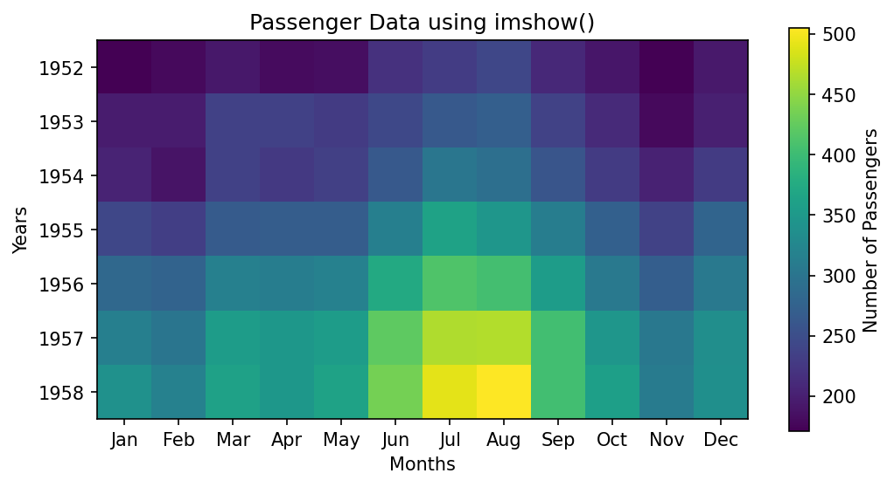
plt.xticks() and plt.yticks() place labels at chosen positions on the axes. See matplotlib.pyplot.xticks.
Step 3 - Plot Using contourf()¶
# Step 3 - Plot the matrix using contourf()
plt.figure(figsize=(8, 4))
# Draw a filled contour plot.
# contourf() groups the values into bands (called levels) and fills each band with one color.
# It also blends smoothly between neighbouring cells.
# Note: by default, row 0 (the year 1952) is drawn at the BOTTOM, like an ordinary graph.
contour_plot = plt.contourf(selected_data)
# Add a title
plt.title("Passenger Data using contourf()")
# Add a color bar that shows the passenger range of each band
plt.colorbar(contour_plot, label="Number of Passengers")
# Add axis labels
plt.xlabel("Months")
plt.ylabel("Years")
# Replace the position numbers with month names and years
plt.xticks(ticks=range(len(month_names)), labels=month_names)
plt.yticks(ticks=range(len(selected_years)), labels=selected_years)
# Print the boundaries of the color bands chosen by Matplotlib
print("Contour levels:", contour_plot.levels.tolist())
# Display the graph
plt.show()
Output
Contour levels: [150.0, 200.0, 250.0, 300.0, 350.0, 400.0, 450.0, 500.0, 550.0]
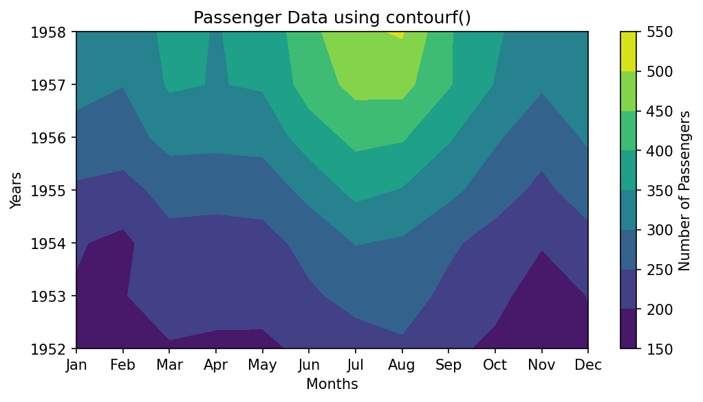
Matplotlib chose band boundaries of 150, 200, 250, ... 550, so each color on the color bar covers a range of 50 passengers.
Complete script for Task 5
# Step 1 - Import the libraries, create the matrix and slice the selected years
import seaborn as sns
import matplotlib.pyplot as plt
# Load the flights dataset
df = sns.load_dataset("flights")
# Convert into matrix form: years as rows, months as columns, passengers as values
flights_matrix = df.pivot(
index="year", # Rows: years
columns="month", # Columns: months
values="passengers", # Cell values: passenger counts
)
# Convert into a NumPy array so that we can slice by position
data = flights_matrix.to_numpy()
# Slice the rows at index 3 to 9, which are the years 1952 to 1958
selected_data = data[3:10, :]
# Keep the matching labels. We need them to name the ticks on the axes,
# because a NumPy array holds only numbers and no year or month labels.
selected_years = list(flights_matrix.index[3:10]) # [1952, ..., 1958]
month_names = list(flights_matrix.columns) # ['Jan', ..., 'Dec']
print("Shape of selected data:", selected_data.shape)
print("Years :", selected_years)
print("Months:", month_names)
print("Smallest value:", selected_data.min(), " Largest value:", selected_data.max())
# Step 2 - Plot the matrix using imshow()
plt.figure(figsize=(8, 4))
# Show the matrix as a grid of colored cells.
# Each cell's color depends on the number of passengers in that cell.
# By default, row 0 (the year 1952) is drawn at the TOP, just like a printed table.
image = plt.imshow(selected_data)
# Add a title
plt.title("Passenger Data using imshow()")
# Add a color bar. It works as a key that links each color to a passenger count.
plt.colorbar(image, label="Number of Passengers")
# Add axis labels
plt.xlabel("Months")
plt.ylabel("Years")
# Replace the default position numbers (0, 1, 2, ...) with month names and years
plt.xticks(ticks=range(len(month_names)), labels=month_names)
plt.yticks(ticks=range(len(selected_years)), labels=selected_years)
# Display the graph
plt.show()
# Step 3 - Plot the matrix using contourf()
plt.figure(figsize=(8, 4))
# Draw a filled contour plot.
# contourf() groups the values into bands (called levels) and fills each band with one color.
# It also blends smoothly between neighbouring cells.
# Note: by default, row 0 (the year 1952) is drawn at the BOTTOM, like an ordinary graph.
contour_plot = plt.contourf(selected_data)
# Add a title
plt.title("Passenger Data using contourf()")
# Add a color bar that shows the passenger range of each band
plt.colorbar(contour_plot, label="Number of Passengers")
# Add axis labels
plt.xlabel("Months")
plt.ylabel("Years")
# Replace the position numbers with month names and years
plt.xticks(ticks=range(len(month_names)), labels=month_names)
plt.yticks(ticks=range(len(selected_years)), labels=selected_years)
# Print the boundaries of the color bands chosen by Matplotlib
print("Contour levels:", contour_plot.levels.tolist())
# Display the graph
plt.show()
Output
Shape of selected data: (7, 12)
Years : [1952, 1953, 1954, 1955, 1956, 1957, 1958]
Months: ['Jan', 'Feb', 'Mar', 'Apr', 'May', 'Jun', 'Jul', 'Aug', 'Sep', 'Oct', 'Nov', 'Dec']
Smallest value: 171 Largest value: 505
Contour levels: [150.0, 200.0, 250.0, 300.0, 350.0, 400.0, 450.0, 500.0, 550.0]
Difference Between imshow() and contourf()¶
| Feature | imshow() |
contourf() |
|---|---|---|
| Display style | Color blocks | Filled contour regions |
| Easy for beginners | Yes | Moderate |
| Best for | Heat maps | Region comparison |
| Appearance | Image-like | Map-like |
| Each cell shown separately | Yes, one square per value | No, values are grouped into bands |
| Blends between cells | No | Yes, draws smooth boundaries between neighbouring values |
| Position of the first row (1952) | Top (like a printed table) | Bottom (like an ordinary graph) |
Comparing the two graphs:
- Both show the same two patterns. Colors get brighter from 1952 to 1958, which shows that air travel grew every year. In every year, the brightest months are July and August, which shows the summer peak.
- imshow() shows every value exactly. Each of the 84 cells (7 years × 12 months) is a separate square. The single brightest cell is August 1958 (505 passengers).
- contourf() shows broad regions. It groups the values into bands of 50 and draws smooth borders between them. This makes the overall "shape" of the growth easy to see, but individual months are harder to read.
- The years run in opposite directions.
imshow()places 1952 at the top, whilecontourf()places 1952 at the bottom. Always read the axis labels before comparing two such graphs. To makeimshow()matchcontourf(), addorigin="lower"like this:plt.imshow(selected_data, origin="lower"). - A word of caution about contourf(). Contour plots were designed for smooth, continuous data such as height or pressure on a map. Months and years are separate steps, so the smooth curves between them are drawn by Matplotlib and are not real data. For this dataset,
imshow()gives the more honest picture.
Common Error Example: Passing a List Instead of a Matrix¶
# WRONG EXAMPLE
# Passing a simple list
# instead of matrix data
# values = [1, 2, 3, 4]
# plt.imshow(values)
# This produces an error
# because imshow()
# expects matrix-style data
This is the same mistake explained in Common Beginner Error: Passing a 1-D List to imshow(). Matplotlib reports TypeError: Invalid shape (4,) for image data. contourf() also needs a 2-D array. Given a 1-D list, it reports TypeError: Input z must be 2D, not 1D.
Solution to Task 6: Comparative Discussion¶
Q1. Which methods were easier to understand?¶
For most beginners, plot() and scatter() are easier to understand because:
- the data is simple
- only x-values and y-values are required
- the graphs are familiar from school mathematics
imshow() comes next, because a grid of colored squares is easy to connect with a table. contour() and contourf() usually take the most effort, because the reader has to understand contour levels and read the color bar carefully.
Q2. When should plot() be preferred?¶
plot() should be preferred when:
- trends are important
- values change over time
- continuous change must be shown
- the points have a natural order, so joining them with a line makes sense
Examples:
- rainfall across months
- stock prices
- student progress
Q3. When should imshow() or contour() be preferred?¶
These methods (including contourf()) should be preferred when:
- data exists in rows and columns
- values form a matrix
- comparison across regions is required
Examples:
- weather maps
- temperature grids
- passenger count across months and years
Between the two:
- choose
imshow()when each cell is a separate item (a month, a city, a pixel) and you want to see every value - choose
contour()orcontourf()when the values change smoothly over space, such as height or air pressure, and you want to see regions and levels
Q4. Which graph looked most informative and why?¶
The answer may vary, because it depends on the question being asked. However:
plot()
helps observe trends clearly. For a single year, it shows the seasonal rise and fall at a glance.
imshow()
helps identify regions of high and low values quickly. For this dataset it is probably the most informative single graph, because it shows both the growth over the years (down the rows) and the summer peak (across the columns), while still showing each month as a separate cell.
contourf()
helps compare regions visually. It gives a good overall impression of how passenger numbers grew, but it hides individual values and draws smooth curves between months that do not exist in the data.
Follow-up questions for discussion:
- (a) If you had to present the flights data to someone in one graph only, which would you choose, and what title would you give it?
- (b) The flights data could also be drawn as 12 lines on one
plot(), one line for each year. What would be the advantage and the disadvantage compared withimshow()? - (c) Change the year in Task 4 from 1955 to 1960. Is the summer peak still in the same months?
Full Combined Model Script¶
This script solves Tasks 1 to 5 in one program. It places the two coordinate graphs side by side in one figure, and the two matrix graphs side by side in a second figure. plt.subplots(1, 2) creates one row of two plot areas. See matplotlib.pyplot.subplots.
When a figure has more than one plot area, we use the ax[0] and ax[1] style (called the object-oriented style) instead of plt.title() and similar functions. The method names change slightly: plt.title() becomes ax[0].set_title(), plt.xlabel() becomes ax[0].set_xlabel(), and so on. See Matplotlib quick start.
# ==================================================
# Complete Project Solution
# Coordinate Data and Matrix Data
# ==================================================
# Step 1 - Import the libraries
import seaborn as sns
import matplotlib.pyplot as plt
# --------------------------------------------------
# Task 1: Load the dataset
# --------------------------------------------------
# Step 2 - Load the flights dataset and look at it
df = sns.load_dataset("flights")
print("Task 1: First five rows")
print(df.head())
print("Shape:", df.shape)
# --------------------------------------------------
# Task 2: Convert the data into matrix form
# --------------------------------------------------
# Step 3 - Pivot the table: years as rows, months as columns, passengers as values
matrix = df.pivot(
index="year", # Each year becomes one row
columns="month", # Each month becomes one column
values="passengers", # Each cell holds the passenger count
)
print()
print("Task 2: Matrix shape (rows, columns):", matrix.shape)
# --------------------------------------------------
# Task 3: Matrix slicing
# --------------------------------------------------
# Step 4 - Convert to a NumPy array and slice the years 1952 to 1958
data = matrix.to_numpy() # Numbers only, sliced by position
selected_data = data[3:10, :] # Rows 3 to 9 (1952 to 1958), all 12 months
selected_years = list(matrix.index[3:10])
month_names = list(matrix.columns)
print()
print("Task 3: Selected years:", selected_years)
print("Shape of sliced data:", selected_data.shape)
# --------------------------------------------------
# Task 4: Coordinate data (one year)
# --------------------------------------------------
# Step 5 - Select the rows for 1955
year_data = df[df["year"] == 1955]
print()
print("Task 4: Passenger counts in 1955")
print(year_data["passengers"].tolist())
# Step 6 - Create one figure with two plots side by side (1 row, 2 columns)
# 'ax' holds the two plot areas: ax[0] is on the left and ax[1] is on the right.
fig, ax = plt.subplots(1, 2, figsize=(12, 4))
# Step 7 - Line plot on the left: shows the trend across the months
ax[0].plot(year_data["month"], year_data["passengers"], marker="o")
ax[0].set_title("Line Plot")
ax[0].set_xlabel("Month")
ax[0].set_ylabel("Passengers")
ax[0].grid(True)
# Step 8 - Scatter plot on the right: shows the same 12 points without a line
ax[1].scatter(year_data["month"], year_data["passengers"])
ax[1].set_title("Scatter Plot")
ax[1].set_xlabel("Month")
ax[1].set_ylabel("Passengers")
ax[1].grid(True)
# Step 9 - Adjust spacing and display both graphs
plt.tight_layout()
plt.show()
# --------------------------------------------------
# Task 5: Grid or matrix data (1952 to 1958)
# --------------------------------------------------
# Step 10 - Create a new figure with two plots side by side
fig, ax = plt.subplots(1, 2, figsize=(12, 4))
# Step 11 - imshow() on the left: one colored cell per value (1952 at the top)
im = ax[0].imshow(selected_data)
ax[0].set_title("imshow()")
ax[0].set_xlabel("Months")
ax[0].set_ylabel("Years")
ax[0].set_xticks(range(12), labels=month_names, rotation=90)
ax[0].set_yticks(range(7), labels=selected_years)
fig.colorbar(im, ax=ax[0], label="Passengers") # Color key for the left plot
# Step 12 - contourf() on the right: filled bands of similar values (1952 at the bottom)
cp = ax[1].contourf(selected_data)
ax[1].set_title("contourf()")
ax[1].set_xlabel("Months")
ax[1].set_ylabel("Years")
ax[1].set_xticks(range(12), labels=month_names, rotation=90)
ax[1].set_yticks(range(7), labels=selected_years)
fig.colorbar(cp, ax=ax[1], label="Passengers") # Color key for the right plot
# Step 13 - Adjust spacing and display both graphs
plt.tight_layout()
plt.show()
print()
print("All tasks completed.")
Output
Task 1: First five rows
year month passengers
0 1949 Jan 112
1 1949 Feb 118
2 1949 Mar 132
3 1949 Apr 129
4 1949 May 121
Shape: (144, 3)
Task 2: Matrix shape (rows, columns): (12, 12)
Task 3: Selected years: [1952, 1953, 1954, 1955, 1956, 1957, 1958]
Shape of sliced data: (7, 12)
Task 4: Passenger counts in 1955
[242, 233, 267, 269, 270, 315, 364, 347, 312, 274, 237, 278]
All tasks completed.
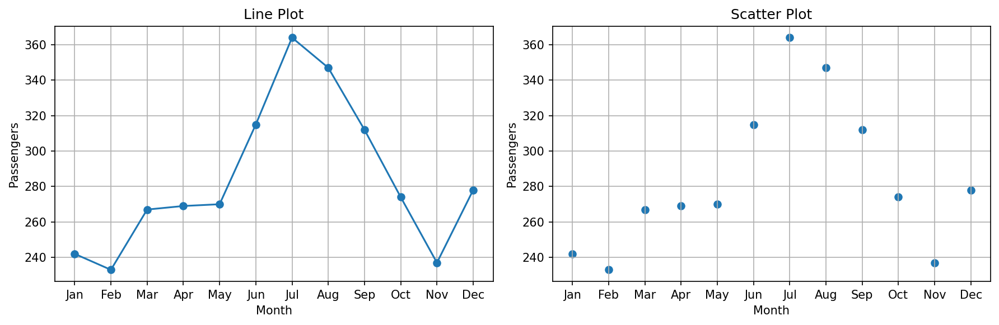
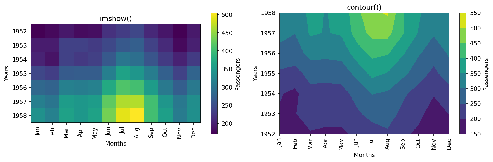
In the second figure, rotation=90 turns the month names on their side so that they do not overlap in the narrower plot areas.
Glossary of Technical Terms¶
| Term | Simple explanation | Learn more |
|---|---|---|
| 1-D and 2-D array | A 1-D array is a single row of numbers. A 2-D array has rows and columns. | NumPy for absolute beginners |
| Color bar | A strip beside a graph showing which color stands for which value | matplotlib.pyplot.colorbar |
| Contour line | A line joining points that have the same value | Contour line |
| Contour level | One of the values at which contour lines are drawn, or a band between two such values in contourf() |
matplotlib.pyplot.contourf |
| Coordinate | A pair of numbers (x, y) that fixes the position of a point on a graph | Cartesian coordinate system |
| DataFrame | A pandas table with labelled rows and columns | pandas DataFrame |
| Heat map | A grid of colored cells in which color shows the size of each value | Heat map |
| Index | The position of an item, counted from 0 | Indexing on ndarrays |
| Long form and wide form | Long form has one reading per row. Wide form spreads the readings across columns, like a matrix. | Reshaping and pivot tables |
| meshgrid | A NumPy function that builds matrices of x and y positions for every point of a grid | numpy.meshgrid |
| Pivot | Reshaping a long table into a matrix, using one column for rows, one for columns and one for values | pandas DataFrame.pivot |
| Pixel | One tiny dot of color in a digital image | Pixel |
| Reshape | Changing the arrangement of an array (for example, 25 numbers into 5 rows and 5 columns) without changing the numbers | numpy.reshape |
| Shape | The size of an array written as (rows, columns) | numpy.ndarray.shape |
| Slicing | Selecting a range of rows, columns or items using the colon : |
Indexing on ndarrays |
| Tick label | The text written beside the small marks on an axis | matplotlib.pyplot.xticks |
| Time series | Values recorded one after another over time | Time series |